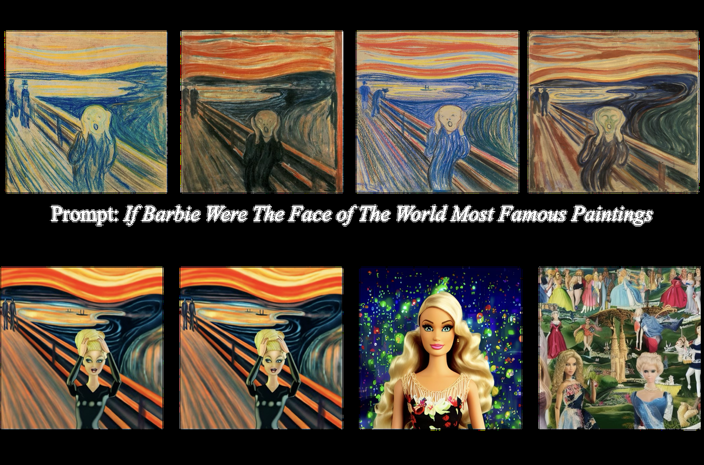

Paper: Mingyu Kim, Dongjun Kim, Amman Yusuf, Stefano Ermon, Mijung Park. Training-Free Safe Denoisers for Safe Use of Diffusion Models. NeurIPS 2025 (Poster). arXiv:2502.08011 · OpenReview
TL;DR
This is the paper that started the research line I’ve been reviewing — the Safety-Guided Flow theory paper generalizes it, and the Safety-Aware Denoiser ports it to text diffusion. The question it asks: can you make a frozen diffusion model avoid generating specific content — NSFW imagery, a copyrighted painting, a person who asked to be forgotten — given nothing but a folder of examples of that content?
The answer is a single exact identity (Theorem 3.2). Split the data distribution into safe and unsafe parts; then the denoiser of the safe part can be written exactly as the pretrained model’s denoiser plus a correction term that points away from the unsafe denoiser, weighted by how likely the current noisy sample is to have come from the unsafe region. The unsafe denoiser is the only unknown, and it is cheaply approximated as a kernel-weighted average of the unsafe examples — no retraining, no fine-tuning, no classifier, no text prompts. Plugged into SAFREE on Stable Diffusion v1.4, it cuts the nudity attack success rate on Ring-A-Bell from 27.8% to 12.7% — while FID on COCO improves (25.29 → 22.55) — and the same mechanism erases a class from ImageNet, suppresses Munch’s style without ever being told the word “Munch,” and mitigates memorization of individuals’ photos.
Why this problem matters
The mainstream tools for keeping diffusion models safe all have structural problems:
- Text-based negative guidance (SLD, negative prompts, SAFREE) can only negate what can be named. Adversarial prompts like MMA-Diffusion’s are white-box-optimized to contain no explicit unsafe words — and there, SLD leaves 88.1% of generations unsafe. Worse, some content has no textual handle at all: a model can reproduce The Scream’s style from the prompt “If Barbie were the face of the world’s most famous paintings,” which mentions neither Munch nor the painting.
- Unlearning by fine-tuning (ESD, RECE) is expensive, risks catastrophic forgetting, and must be redone for every new concept and every model checkpoint.
- Post-hoc filters act after an unsafe image already exists, and adversarial prompt engineering is precisely the art of getting past them.
The gap is a mechanism that (a) defines “unsafe” by examples rather than words, (b) acts inside the sampling loop, and (c) touches no weights. That’s what this paper builds.
The core identity: safety is Bayes’ rule, not a heuristic
Define indicator functions that partition the data: every \(x\) in the support of \(p_\text{data}\) is either safe or unsafe, so \(\mathbb{1}_\text{safe}(x) + \mathbb{1}_\text{unsafe}(x) = 1\) and the safe distribution is the restriction \(p_\text{safe}(x) = \frac{1}{Z_\text{safe}}\mathbb{1}_\text{safe}(x)\,p_\text{data}(x)\) with \(Z_\text{safe} = \int \mathbb{1}_\text{safe}(x)\,p_\text{data}(x)\,dx\) (and analogously for unsafe). Each distribution has its own denoiser — the posterior mean of clean data given the noisy sample, \(\mathbb{E}_\bullet[x \mid x_t] = \frac{\int x\, p_\bullet(x)\, q_t(x_t \mid x)\, dx}{p_{\bullet,t}(x_t)}\), where \(q_t(x_t \mid x) = \mathcal{N}(x_t;\, \alpha_t x,\, \sigma_t^2 I)\) is the forward kernel and \(p_{\bullet,t}\) the noisy marginal. The paper’s central result (Theorem 3.2):
\[ \mathbb{E}_\text{safe}[x \mid x_t] \;=\; \mathbb{E}_\text{data}[x \mid x_t] \;+\; \beta^*(x_t)\Big(\mathbb{E}_\text{data}[x \mid x_t] - \mathbb{E}_\text{unsafe}[x \mid x_t]\Big), \qquad \beta^*(x_t) \;=\; \frac{Z_\text{unsafe}\, p_{\text{unsafe},t}(x_t)}{Z_\text{safe}\, p_{\text{safe},t}(x_t)}. \]
The proof is three observations, and the structure is worth seeing. The appendix derives it by splitting \(\mathbb{1} = \mathbb{1}_\text{safe} + \mathbb{1}_\text{unsafe}\) inside the integrals, but it’s cleanest read backwards, as an inverted mixture decomposition:
- Noisy marginals mix linearly. Diffusing a mixture is the mixture of diffusions, so \(p_{\text{data},t}(x_t) = Z_\text{safe}\, p_{\text{safe},t}(x_t) + Z_\text{unsafe}\, p_{\text{unsafe},t}(x_t)\) at every \(t\).
- Denoisers therefore mix with posterior weights. Conditional expectations under a two-component mixture decompose as \[ \mathbb{E}_\text{data}[x \mid x_t] = P(\text{safe} \mid x_t)\, \mathbb{E}_\text{safe}[x \mid x_t] + P(\text{unsafe} \mid x_t)\, \mathbb{E}_\text{unsafe}[x \mid x_t], \] where \(P(\text{unsafe} \mid x_t) = \frac{Z_\text{unsafe}\, p_{\text{unsafe},t}(x_t)}{p_{\text{data},t}(x_t)}\) is the posterior probability that \(x_t\) was produced by noising an unsafe datum. The pretrained denoiser is, exactly, a posterior-weighted blend of the safe and unsafe denoisers.
- Solve for the safe denoiser. Rearranging with \(\beta^* = \frac{P(\text{unsafe} \mid x_t)}{P(\text{safe} \mid x_t)}\) gives \(\mathbb{E}_\text{safe} = (1+\beta^*)\,\mathbb{E}_\text{data} - \beta^*\,\mathbb{E}_\text{unsafe}\), which is the theorem.
So \(\beta^*(x_t)\) is not a designed weight — it is the posterior odds that the current trajectory originated from the unsafe set. That single fact explains all its qualitative behavior: it grows when \(x_t\) drifts toward unsafe territory, vanishes when the trajectory is safely far away, and its precise value is a calibration, not a knob. The 2D toy ablation (Figure 3 of the paper) confirms the calibration reading: at half the theoretical weight, samples leak into the unsafe region; at the theoretical weight they avoid it while still covering the entire safe support; at double the weight they over-avoid, vacating the unsafe set’s neighborhood and losing coverage of legitimate nearby modes.
The score-space view. By Tweedie’s formula, \(\mathbb{E}_\bullet[x \mid x_t] = \frac{1}{\alpha_t}\big(x_t + \sigma_t^2\, \nabla_{x_t} \log p_{\bullet,t}(x_t)\big)\), so the guidance direction is a log-likelihood-ratio gradient:
\[ \mathbb{E}_\text{data}[x \mid x_t] - \mathbb{E}_\text{unsafe}[x \mid x_t] \;=\; \frac{\sigma_t^2}{\alpha_t}\, \nabla_{x_t} \log \frac{p_{\text{data},t}(x_t)}{p_{\text{unsafe},t}(x_t)}. \]
That is classifier guidance with an implicit safe-vs-unsafe classifier — no classifier ever trained — and it clarifies why the identity has exactly the shape of CFG (denoiser plus a scaled difference of denoisers) and drops into any sampler as one extra term. SLD’s adaptive weight \(\mu\) was a heuristic gesture at this quantity; \(\beta^*\) is what Bayes’ rule says it must be. Note also what the theorem quietly avoids: the safe score itself, \(\nabla \log p_{\text{safe},t}\), is the score of a difference of densities (\(Z_\text{safe}\,p_{\text{safe},t} = p_{\text{data},t} - Z_\text{unsafe}\,p_{\text{unsafe},t}\)), which has no simple expression in terms of the component scores — the posterior-mean formulation is what linearizes the problem.
From identity to algorithm: the three approximations
Everything above is exact. The pretrained model supplies \(\mathbb{E}_\text{data}[x \mid x_t] \approx \frac{1}{\alpha_t}(x_t - \sigma_t \epsilon_\theta(x_t, t))\); the other two quantities must come from a negation set \(\{x^{(n)}\}_{n=1}^N\) of unsafe examples (515 nudity images from I2P, four photographs of The Scream, ten photos of one person…). This is where the paper’s real design decisions live — and, since the paper interleaves them with the theorem in a way that takes effort to disentangle (the reviewers’ uniform clarity-2 scores have a point), it’s worth laying out each approximation, what it preserves, and what it silently changes.
Approximation 1 — the unsafe denoiser: kernel regression on the negation set
Both the numerator and denominator of \(\mathbb{E}_\text{unsafe}[x \mid x_t] = \frac{\int x\, p_\text{unsafe}(x)\, q_t(x_t \mid x)\, dx}{\int p_\text{unsafe}(x)\, q_t(x_t \mid x)\, dx}\) are expectations under \(p_\text{unsafe}\), so replace \(p_\text{unsafe}\) with the empirical measure \(\frac{1}{N}\sum_n \delta_{x^{(n)}}\):
\[ \hat{\mathbb{E}}_\text{unsafe}[x \mid x_t] \;=\; \sum_{n=1}^N w_n(x_t)\, x^{(n)}, \qquad w_n(x_t) \;=\; \frac{q_t(x_t \mid x^{(n)})}{\sum_{m} q_t(x_t \mid x^{(m)})} \;=\; \operatorname{softmax}_n\!\left(-\frac{\|x_t - \alpha_t x^{(n)}\|^2}{2\sigma_t^2}\right). \]
This is a Nadaraya–Watson kernel regression estimate of the posterior mean — equivalently, self-normalized importance sampling. Numerator and denominator are each unbiased Monte Carlo estimates of their integrals; the ratio is biased at finite \(N\) but consistent as \(N \to \infty\) (and the \(N\)-ablation, where safety keeps improving from 200 to 500 references, is the empirical face of that consistency).
The two limits of the softmax explain the method’s dynamics better than any prose in the paper:
- High noise (\(t \to T\), \(\sigma_t\) large): the exponents flatten, \(w_n \to 1/N\), and the estimate tends toward the barycenter of the negation set — a broad, semantic “average unsafe direction.” Repulsion here steers coarse composition, which is exactly what safety needs.
- Low noise (\(t \to 0\), \(\sigma_t \to 0\)): the softmax collapses to an argmax and the estimate snaps to the single nearest unsafe reference. The correction term then subtracts one specific clean image from the prediction — an image-shaped, high-frequency perturbation injected during detail refinement. This is precisely the paper’s observed failure mode for late guidance (“acts as structural noise”), derived rather than observed.
One caveat the paper doesn’t quantify: the estimator is only trustworthy where the negation set has mass near the trajectory. The softmax’s effective sample size \(1/\sum_n w_n^2\) can collapse to \(\approx 1\) in sparse regions, at which point “the unsafe denoiser” means “whichever reference happens to be least far away.”
Approximation 2 — the weight: from posterior odds to a thresholded likelihood
The exact weight is a ratio, and its two halves are wildly unequal in difficulty:
\[ \beta^*(x_t) = \frac{\overbrace{Z_\text{unsafe}\, p_{\text{unsafe},t}(x_t)}^{\text{estimable from } N \text{ references}}}{\underbrace{Z_\text{safe}\, p_{\text{safe},t}(x_t)}_{\text{KDE over the entire safe corpus}}}. \]
The numerator is \(\int \mathbb{1}_\text{unsafe}(x)\, p_\text{data}(x)\, q_t(x_t \mid x)\, dx\) — the same kernel evaluations as Approximation 1, so \(\frac{1}{N}\sum_n q_t(x_t \mid x^{(n)})\) estimates it (up to \(Z_\text{unsafe}\)) for free. The denominator, however, is a kernel density estimate over everything safe the model was trained on — for Stable Diffusion, LAION-scale — evaluated at every one of 50 sampling steps. Infeasible. The paper’s move is blunt: keep the numerator, replace the denominator with a constant,
\[ \beta^*(x_t) \;\approx\; \eta \cdot \beta(x_t), \qquad \beta(x_t) = \frac{1}{N}\sum_{n=1}^N q_t(x_t \mid x^{(n)}). \]
What survives: monotonicity — \(\beta(x_t)\) rises exactly when the unsafe-origin likelihood rises, so trajectories that look more unsafe are pushed harder, preserving the ordering the theorem prescribes. What’s lost is everything the denominator was doing:
- Scale. \(\beta\) is now an unnormalized Gaussian density value in very high dimension — a number whose magnitude swings by orders of magnitude across timesteps, datasets, and bandwidths. The constant \(\eta\) has to absorb all of it, which is why it lands at 0.02 (ImageNet), 0.03 (SLD), 0.33 (SAFREE), 0.69 (memorization) across this paper’s experiments — and up to 128 in SAD downstream. \(\eta\) isn’t a preference dial; it’s compensating for a discarded normalizer.
- Gating direction. The true \(\beta^*\) is an odds ratio: it can be large even where the unsafe density is tiny, provided the safe density is tinier still. The likelihood proxy can’t see that — where both densities are small (early, far-from-data regions) it silently under-guides relative to the exact weight, and near dense safe modes it can fire when the true odds say don’t bother.
The threshold \(\beta_t\) (text-to-image mode: zero out the correction whenever \(\beta(x_t) < \beta_t\)) restores a piece of the lost gating — intervene only when unsafe origin is plausible — and its ablation traces a clean U-shape in attack success rate: \(\beta_t = 0\) (always-on guidance) and \(\beta_t = \infty\) (never-on) are both worse than selective triggering. The exact \(\beta^*\) would have done this gating automatically.
Approximation 3 — the kernel and the schedule: where theory hands over to tuning
The theorem fixes the kernel: it must be the forward kernel \(q_t\), whose bandwidth \(\sigma_t/\alpha_t\) is dictated by the noise schedule — there are no free parameters. The implementation (Appendix C) quietly replaces it with an RBF kernel \(K(x, x') = \exp\!\big(-\|x - x'\|^2 / 2\sigma^2\big)\) whose bandwidth is hand-tuned per task: \(\sigma = 1.0\) for SLD, \(3.15\) for SAFREE, \(13.15\) for the memorization experiment. The bandwidth thereby becomes a reach knob — how far into image space each reference’s repulsion extends — decoupled from the diffusion schedule that the theory says should determine it. (This freed bandwidth is exactly the object SGF later promotes to a first-class citizen via the MMD potential’s kernel.)
The guidance window \(C\) is likewise per-task: timesteps \([780, 1000]\) of 1000 for text-to-image — only the high-noise first ~22% of reverse sampling — but \([200, 800]\) for the ImageNet class-negation experiment and all timesteps for FFHQ. The early-only choice for text-to-image follows directly from the softmax limit analysis above (late-time repulsion subtracts a specific clean image during detail refinement), but as deployed it’s an empirical setting justified by one sentence of intuition, and the fact that three experiments needed three different windows shows how much slack the theory leaves here. Turning “early is provably better” into a theorem is, again, precisely what SGF did next.
Cost of all three, for the record: each step needs \(N\) squared distances \(\|x_t - \alpha_t x^{(n)}\|^2\) — one batched matrix operation, \(O(Nd)\), with the softmax computed via log-sum-exp. That’s the entire overhead, and it’s why N=3,000 references cost 0.07 s/image.
Plug-in composition. Because the theorem simply replaces \(\mathbb{E}_\text{data}\) with \(\mathbb{E}_\text{safe}\), the method stacks on top of SLD and SAFREE unchanged: their text-space guidance terms are added to \(\hat{\mathbb{E}}_\text{safe}\) instead of \(\mathbb{E}_\text{data}\) (Eqs. 8–9 of the paper), giving text-based steering plus image-based repulsion. The 2×2 ablation on MMA-Diffusion says composition is the whole game: raw SD-v1.4 is 96.2% unsafe, SAFREE alone 60.1%, Safe Denoiser alone 63.3%, both together 46.9%.
Experiments
Adversarial nudity prompts (Ring-A-Bell, UnlearnDiff, MMA-Diffusion; NudeNet as judge). On SD-v1.4, SAFREE + Safe Denoiser reaches ASR 12.7 / 20.7 / 46.9% versus 27.8 / 35.3 / 60.1% for SAFREE alone — and beats the fine-tuned unlearning baselines ESD and RECE on the safety–quality Pareto front, with COCO-30K FID actually improving (25.29 → 22.55). The MMA-Diffusion column is the telling one: text-based SLD barely helps there (88.1% unsafe) because the adversarial prompts contain no nudity words to negate, while image-based guidance halves it (→ 48.1%) — the clearest demonstration that example-based negation covers a failure mode text-based methods structurally cannot.
Multi-concept safety (CoPro, seven I2P categories, Q16 judge). With a 3,000-image negation set spanning all categories, average inappropriate probability drops for every baseline it’s added to (SD 0.223 → 0.187, SLD 0.170 → 0.151, SAFREE 0.153 → 0.144), with CLIP alignment essentially intact — one mechanism handling seven concepts simultaneously.
Standalone negation (no text guidance possible). Class removal on class-conditional ImageNet: conditioning on “Chihuahua” after negating that class yields 0.00 Top-1 accuracy on the negated class (from 0.68), with better precision/recall than the Sparse Repellency baseline. On unconditional FFHQ, negating female faces shifts the split 64/36 → 55.6/44.4 — and here the comparison is instructive: Sparse Repellency pushes the classifier score slightly further (53.1%) but at FID 130.5 versus the baseline’s 109.1, i.e., by generating degraded out-of-distribution images, while Safe Denoiser improves FID to 96.6.

Style-level IP control — the flagship qualitative result. The paper identifies three IP-leak scenarios: the prompt names the work, describes it, or — hardest — does neither, yet the model reproduces the style anyway. Text-only defenses have nothing to negate in case three. With just four images of The Scream as the negation set, the safe denoiser strips Munch’s style while preserving the prompt’s actual concept (Figure 6 above). This is, to me, the single best argument for defining unsafety extensionally.
Frontier-model compatibility (SD-v3). Plugged into SD-v3, ASR on Ring-A-Bell drops 0.304 → 0.203 (a 33% relative reduction, versus SAFREE’s 9%) with FID again slightly improving. The paper’s explanation for the recurring FID gains is worth remembering: high CFG scales trade diversity for prompt alignment, and the safe denoiser’s image-space repulsion injects text-independent stochasticity that partially restores that lost diversity.
Cost. On an RTX 4090, the overhead is nearly invisible: 4.22 → 4.24 s/image on SAFREE with N=515 negatives, 4.29s with N=3,000 — sub-linear in N because the kernel evaluations are batched matrix multiplies. SAFREE itself costs over 1s per image; the safety add-on costs two hundredths.
Strengths
- An exact identity where the field had heuristics. Theorem 3.2 is Bayes’ rule, not an approximation — the decomposition is exact, and every prior trajectory-modification method suddenly has a reference point. Sparse Repellency’s ReLU-thresholded push is recognizably a crude \(\beta^*\); SLD’s adaptive \(\mu\) is a text-space shadow of it. The paper explicitly frames SR as a special case lacking the distributional guarantee, and SGF later made that unification rigorous.
- Extensional unsafety is the right abstraction for the hard cases. MMA-Diffusion prompts (no unsafe words), Munch’s style (no textual handle), a specific person’s photos (no concept name) — the three strongest results in the paper are all cases where “define unsafe by examples” works and “define unsafe by words” cannot.
- Safety that doesn’t tax quality. FID improves alongside safety in the SAFREE, FFHQ, and SD-v3 experiments. The diversity-restoration explanation is plausible and, in hindsight, foreshadows SGF’s memorization finding (pushing away from memorized modes frees the model).
- Genuinely deployable. Training-free, ~0.02s overhead, sub-linear in negation-set size, composable with whatever text-based guard you already run. The practitioner recipe is one sentence: collect examples of what you don’t want, add one term to the sampler.
Weaknesses / open questions
- The \(\beta^*\) theory–practice gap. What’s exact is the decomposition; what runs replaces the posterior odds with a thresholded, \(\eta\)-rescaled likelihood (Approximation 2 above), plus a hand-tuned bandwidth and time window. The toy experiment itself shows the method is sensitive to weight miscalibration — half the theoretical weight leaks, double over-avoids — yet the deployed weight discards precisely the normalizer that made \(\beta^*\) calibrated, and no bound on the resulting error is offered. This exact critique carries over to SAD, which inherits the approximation wholesale.
- “Apply it early” is an observation here, not a result. The critical-window choice follows naturally from the softmax limit analysis (the estimator degenerates to nearest-reference subtraction at low noise), but the paper never makes that argument formally — the window is set empirically, and differently for each of the three experimental settings. It took the follow-up SGF paper to turn this into a theorem; reading this paper now, the window is the most obviously under-theorized moving part.
- The blind spot of every reference-based method. Repulsion strength is kernel proximity to finitely many examples; semantically unsafe content that is far from every reference in pixel/latent space feels nothing. The residual 46.9% ASR on MMA-Diffusion — after combining two defenses — is the honest measure of the remaining gap.
- Standalone negation is only partial. The FFHQ result moves the female fraction from 64% to 55.6% — clearly better-behaved than Sparse Repellency, but far from negation. For coarse, high-mass regions of an unconditional model, a 515-image-scale repulsive mixture evidently can’t carve out the whole region.
- Evaluation rests on classifiers (NudeNet, Q16, a ResNet sex classifier), whose artifacts the FFHQ experiment itself demonstrates: SR “wins” the classifier metric by generating garbage. The paper is honest about this, but a human evaluation would have strengthened the safety claims.
My take
Reading this after its two descendants is like reading the first paper of a trilogy last: the ideas that SGF proves and SAD transplants are all here in embryonic form, and it’s striking how much of the line’s DNA was set in this one move — replace “unsafe” as a word with “unsafe” as a dataset, and let Bayes’ rule tell you the force. The theorem is simple (the proof is essentially conditional probability), and that’s a feature: it explains why the method composes so cleanly with CFG-family guidance and why later work could generalize it rather than replace it.
What holds it back from being more than a strong poster is the distance between the theorem and the algorithm. Everything provable lives in Eq. (4); everything deployed lives in the approximations — constant \(\eta\), thresholded \(\beta\), empirical time window — and the paper doesn’t quantify what those approximations cost. It’s telling that the strongest follow-up (SGF) is precisely a paper about closing that gap. But judged as the opening move of a research line, it’s an excellent one: a clean primitive, an honest evaluation, and two qualitative results (the Munch experiment, the memorization figure) that make the case better than any table.
Verdict: the foundational “define it by examples, derive the force by Bayes” paper — read it first, then SGF for why the timing works, then SAD for the same idea in text diffusion.
Peer review at a glance
Safe Denoiser was accepted as a Poster at NeurIPS 2025, reviewed by five reviewers. Scores are from Paper Copilot’s open dataset; the review text lives on the OpenReview forum. On NeurIPS 2025’s 6-point rating scale, the 4.2 average sits almost exactly at the median of accepted papers (~4.25) — a solidly ordinary accept:
| Rating | Confidence | Quality | Clarity | Significance | Originality | |
|---|---|---|---|---|---|---|
| Reviewer K2qK | 4 | 3 | 2 | 3 | 3 | 2 |
| Reviewer vAUD | 4 | 3 | 3 | 3 | 2 | 3 |
| Reviewer ksP9 | 4 | 4 | 3 | 2 | 3 | 3 |
| Reviewer u6A8 | 4 | 3 | 3 | 2 | 3 | 3 |
| Reviewer Wpcs | 5 | 4 | 2 | 2 | 2 | 3 |
| Average | 4.2 | 3.4 | 2.6 | 2.4 | 2.6 | 2.8 |
The consistent 2s in clarity are the most interpretable signal in the grid — and, having read the paper closely, fair: the method section interleaves the exact theorem with its stack of approximations in a way that takes real effort to disentangle (see weaknesses #1). The uniform near-consensus (4,4,4,4,5) contrasts sharply with the 4-to-10 spread its successor SGF drew at ICLR — reviewers agreed on what this paper is: a sound, useful primitive rather than a surprising one.